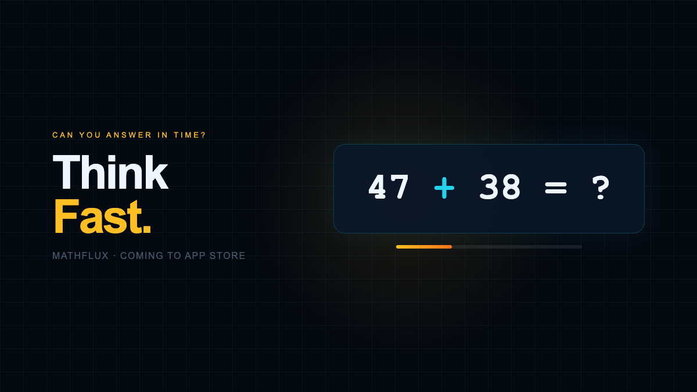

Projects across instructional design, EdTech, and experience design. Each one started with the same question: what does this person need to understand, and what’s the clearest path to get them there?

A real-time competitive math game that teaches arithmetic by playing it, with five difficulty tiers from kindergarten to college and a live head-to-head competition mode. I designed the full learning loop: an onboarding flow that gets a new player productive in under a minute, a difficulty curve that scales with skill, and feedback timed so a wrong answer teaches instead of discourages. Built natively for iOS — the design problem was instructional at its core: fun enough that kids keep playing, rigorous enough that they actually improve.
A virtual-reality simulation that lets learners rehearse a veterinary spay procedure in a safe, repeatable environment. Immersive instructional design is its own discipline: the lesson has to be legible inside the headset, the steps have to be sequenced like a procedure, and the learner has to be able to fail and try again at no cost. Built as part of my visualization work at Texas A&M.
An app built around how teachers actually plan and run instruction. I mapped the educator’s workflow, then designed an interface that reduces prep friction and keeps the focus on the learning goal rather than the tooling. The embedded prototype is fully clickable — tap through the real flow.
As a teaching assistant for an honors engineering program at Texas A&M University, I worked with 400+ students a semester across several sections — over 2,000 students in all from 2021 to 2025. I built learning objectives, sequenced material so beginners could move from raw concepts to applied work, and rewrote explanations based on where students actually got stuck. This is where adult-learning theory stopped being abstract — I watched in real time how sequencing and practice decide whether knowledge transfers.
An instructional design project that turns a learning goal into a clear, engaging experience — defining the audience, the objectives, and the path between them. The embedded walkthrough shows the design in motion.
A UX project around encouraging and capturing vaccine commitments — designing for clarity, trust, and a frictionless path to action on a sensitive topic.
A booking app for photography — designing the flow from browsing to scheduling to confirmation, with the friction designed out of every step.
teacher-app.png,
photo-booking.png, and vaccine-pledge.png into assets/ and
swap the colored <div class="ph ..."> for <div class="ph has-img"><img src="assets/…"></div>.
A selection of my public repositories — mostly learning games, AR/VR experiments, and visualization work. Each one was a chance to test how interaction and code can carry a lesson. See all on GitHub →
An augmented-reality game that teaches kids about the solar system — turning a science topic into something you explore with your hands instead of reading about it.
A digital-twin visualization built in Unreal Engine to make maintenance workflows legible — the same project behind my offshore-wind digital-twin work.
An educational recycling game built at a hackathon — using play to teach which bin things belong in, designed and shipped under time pressure.
A real-time destructible-geometry experiment — testing boolean subtraction to build a believable drilling mechanic, the kind of prototype that de-risks a bigger simulation.
An Unreal Engine third-person prototype for building game mechanics — a MetaHuman character with interactive Blueprint props, like a chest that opens and shifts color and a trigger that pauses play. A sandbox for interaction design.
The visual identity behind MathFlux — logo, color, type, and marketing assets kept in one place so the game ships with a consistent, recognizable look.
Happy to walk through process, decisions, and outcomes for any project. Reach out anytime.